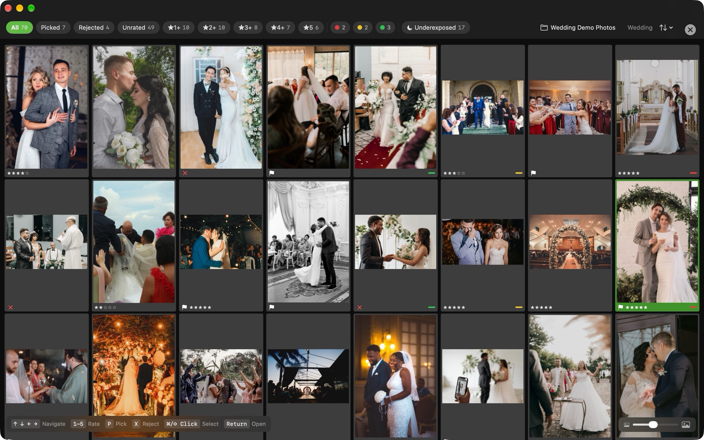

Get through the whole card tonight and start tomorrow with your selects.
Palomino is a fast RAW photo culling app for the Mac. It gets a 2,000-photo wedding, game, or event down to its keepers in one sitting, ready to import into Lightroom or Capture One.
I built Palomino for the part of the job that starts when the shoot ends and a few thousand frames are waiting on the card. Making culling fast is the only job I set out to do. You rate and reject from the keyboard, Palomino copies your selects to a folder, and your editor takes it from there.
Palomino is free to download and exports up to 50 photos per session. Palomino Pro removes the limit for a one-time purchase of $29.99.
It requires macOS 15 Sequoia or later and runs on Apple silicon and Intel Macs.
